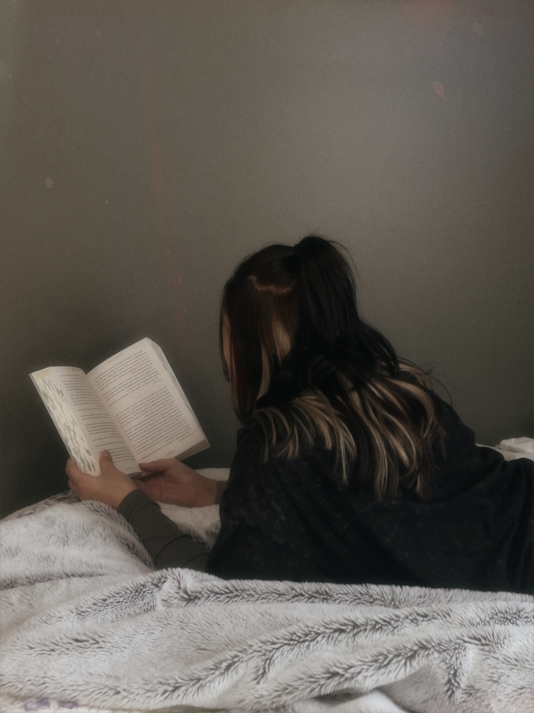

About Me
My name is Camryn Gagliardi. I am a 21yo Graphic Design student at Algonquin College. One of my favourite things to do in my free time is read. On average I read between 100-250 books per year and work alongside publishers and independent authors to help promote upcoming releases through social media. One of my favourite books/series is the Throne of Glass series by Sarah J Maas. Throne of Glass is a high fantasy series following the journey of Celaena Sardothien, an 18yo assasin in the Kingdom of Adarlan. As the series progresses Celaena is drawn unto a conspiracy and a series of battles, leading to discoveries about herself and the kingdom.
Subsequently, I have a connective tissue disorder which has caused many other health issues such as intestinal failure. Due to these, I spend a lot of my free time at doctors’ appointments, or in the hospital. My longest hospital admission so far was 4.5 months. During this admission, I fell in love with reading again. Reading provides a distraction from the chaotic nature of hospitals.
"Pain is inevitable, suffering is optional."
- Buddhist Proverb
My Skills
- Bilingual
- Ability to multi-task
- Time managment
- Attention to detail